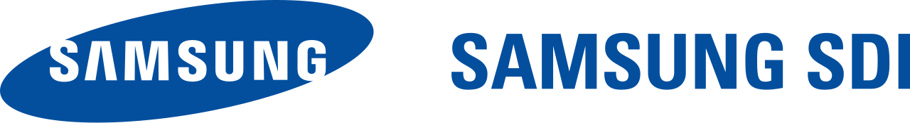
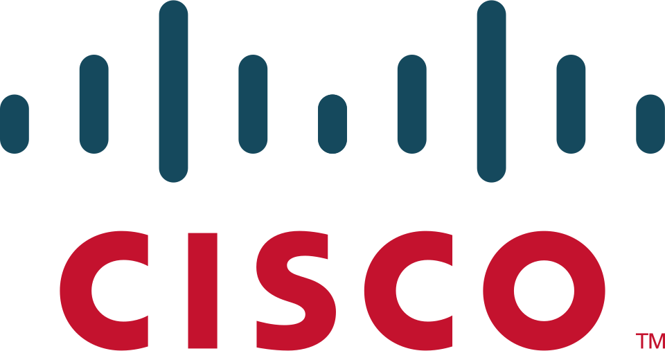

홈 > 브랜드 매거진 > 파크시스템스
파크시스템스
파크시스템스는 원자현미경(AFM)을 핵심으로 하는 한국의 나노 계측 장비 전문 기업이다. 사물을 나노미터 단위로 정밀 측정하는 장비를 연구용과 반도체 산업용으로 공급한다. 2022년 이후 글로벌 원자현미경 시장 점유율 1위를 지키는 코스닥 상장 강소기업으로, 반도체·소재·2차전지·바이오 등 폭넓은 분야에 장비를 납품한다.
산업 분야 기술·전자 · 공개 등급 자료 기반 · 브랜드 평가 4.1 ★
한눈에 보는 브랜드
파크시스템스는 원자현미경(AFM)을 핵심으로 하는 한국의 나노 계측 장비 전문 기업이다. 사물을 나노미터 단위로 정밀 측정하는 장비를 연구용과 반도체 산업용으로 공급한다.
2022년 이후 글로벌 원자현미경 시장 점유율 1위를 지키는 코스닥 상장 강소기업으로, 반도체·소재·2차전지·바이오 등 폭넓은 분야에 장비를 납품한다.
브랜드 관점
성장 동력은 산업용 원자현미경과 반도체 계측 수요다. 2024년 매출에서 산업용 장비 비중이 약 74퍼센트로 연구용을 크게 앞섰고, 같은 해 매출 1751억원과 영업이익 385억원으로 창사 이래 최대 실적을 기록했다.
파운드리의 2나노 미세공정 양산과 첨단 패키징 증설이 전·후공정 계측 수요를 동반 확대하는 구조가 실적을 끌어올린다.
시작과 성장
창업자 박상일은 미국 스탠퍼드대 박사 과정에서 원자현미경 공동 발명자인 캘빈 퀘이트 교수 연구팀의 핵심 일원으로 IBM 연구진과 함께 AFM 개발에 참여했다. 1988년 실리콘밸리에서 원자현미경 기업 파크사이언티픽인스트루먼트(PSI)를 세워 상용화를 이끌었고, 1997년 이 회사를 매각한 뒤 귀국해 더 앞선 기술을 표방하며 파크시스템스의 전신을 설립했다.
이후 NX 계열 장비를 내놓으며 2015년 코스닥에 상장했다.
브랜드 아이덴티티
파크시스템스는 정밀 나노 계측 기술의 원조 기업이라는 정체성을 강조한다. 창업자가 원자현미경 발명 연구에 직접 참여한 이력을 바탕으로 기술 독자성과 글로벌 1위 입지를 핵심 가치로 내세우며, 미국 KLA와 같은 종합 계측 강자로의 도약을 지향한다.
제품과 서비스
주력 제품은 나노미터 단위 측정이 가능한 원자현미경(AFM)으로, 연구용 장비와 반도체 공정용 산업용 장비로 나뉜다. 디지털 홀로그래픽 현미경(DHM)과 이미지 분광 타원계측 등으로 영역을 넓혀 반도체 종합 계측 장비로 제품군을 확장하고 있다.
현재 상태
파크시스템스는 원자현미경 시장 1위를 유지하며 반도체 종합 계측 장비사로의 전환을 추진한다. 스위스 린시테크 인수로 광학 계측 기술을 확보하고, 매출 2000억원 돌파를 목표로 사업을 다각화하고 있다.
타임라인
정리된 연도형 이벤트가 없습니다.
BI/CI 변천사
확인된 BI/CI 이미지가 아직 없습니다.
함께 읽을 브랜드
한미반도체는 반도체 후공정 장비를 설계·제조하는 인천 기반 코스피 상장사다. 패키지 절단용 마이크로쏘와 검사·분류 장비 비전플레이스먼트로 2000년대 중반부터 세계...
주성엔지니어링은 반도체 박막증착장비를 중심으로 디스플레이와 태양전지 공정장비까지 아우르는 한국의 장비 전문기업이다. 원자층증착 기술을 핵심 경쟁력으로 삼아 메모리와...
리노공업은 반도체 검사용 테스트 핀과 IC 테스트 소켓을 만드는 부산 기반의 코스닥 상장 기업이다. 자체 브랜드 리노핀과 테스트 소켓이 매출 대부분을 차지하며, 삼성...
 기술·전자 · 자료 기반삼성전자
기술·전자 · 자료 기반삼성전자삼성전자(Samsung Electronics)는 한국을 대표하는 전자·반도체 기업으로, 인터브랜드 2025 베스트 코리아 브랜드 1위(브랜드 가치 약 122.2조 원...

기술·전자 · 자료 기반삼성SDI삼성SDI(Samsung SDI)는 삼성그룹 계열의 2차전지·전자재료 기업으로, 1970년 삼성-NEC로 출발해 1999년 현 사명이 됐다.
고영테크놀러지는 3차원 정밀측정 기술을 기반으로 전자제조 공정의 검사장비를 만드는 한국 기업이다. 세계 최초로 3D 납도포 검사기(SPI)를 상용화했고, 광학·비전·...
원익IPS는 반도체와 디스플레이 제조 공정에 쓰이는 박막 증착·열처리 장비를 만드는 원익그룹 계열 코스닥 상장사다. 화학기상증착과 원자층증착 등 핵심 박막 공정 장비...

기술·전자 · 편집 검수시스코시스코 시스템즈(Cisco Systems)는 라우터·스위치 등 네트워킹 장비와 사이버보안·협업 솔루션을 개발하는 미국의 IT 기업이다.